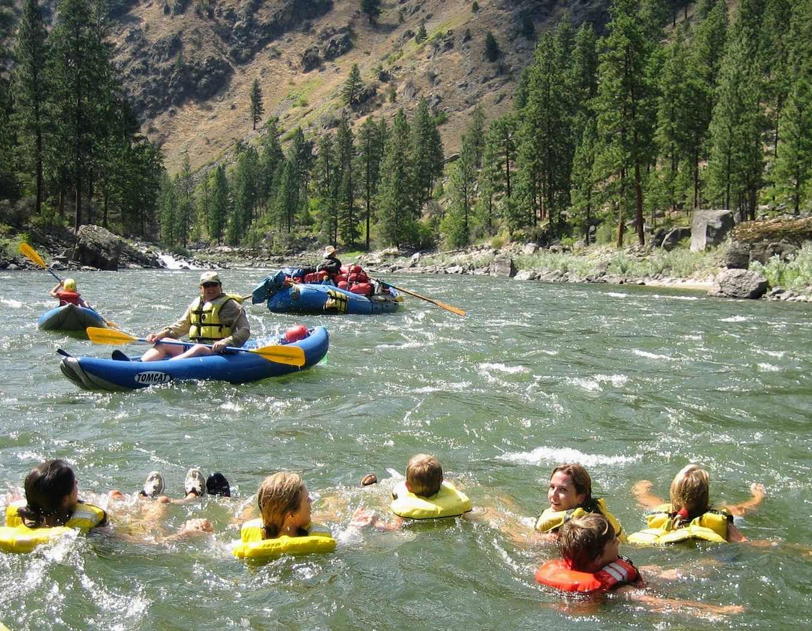
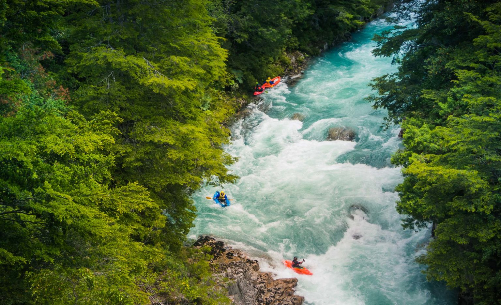
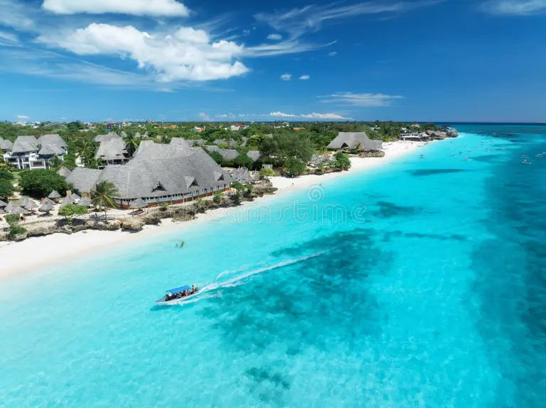

READY TO HAVE FUN?
The river roared like a wild beast, its foaming waves daring us to take the plunge. With every paddle stroke, icy spray slapped my face, my heart pounding in sync with the raging current. Laughter and shouts echoed between the canyon walls as our raft danced over swirling rapids, teetering between thrill and chaos. In that moment, soaked to the bone and grinning ear to ear, I knew this was not just a trip—it was an adrenaline-fueled memory I would never forget.
BOOK A TRIP
Planning river adventures with the whole family offers a unique blend of relaxation, nature exploration, and bonding opportunities. Such outings can range from gentle floats suitable for young children to more adventurous canoeing or rafting trips for thrill seekers.

One of the popular spots for kayakers and rafters, the Celestial Falls is a 50 foot high fall. The rapid is legally shut for safety reasons. It consisted of extreme class VI rapids. But the upper part of the river, including class III and IV rapids, is still a sought-after location for white water rafting and kayaking.

The Sunset Scenic Float white water rafting experience offers a thrilling adventure combined with relaxation. Participants can conquer exciting rapids while enjoying breathtaking views of the sunset.
| Trip Name | Duration | Difficulty | Price |
|---|---|---|---|
| Family river adventure | 2hours | Easy | $50 |
| Extreme rapid challenge | 1hours | hard | $100 |
| Sunset scenic float | 2hours | Easy | $70 |